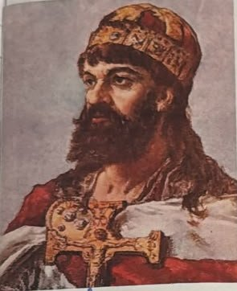
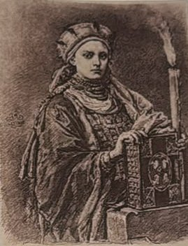
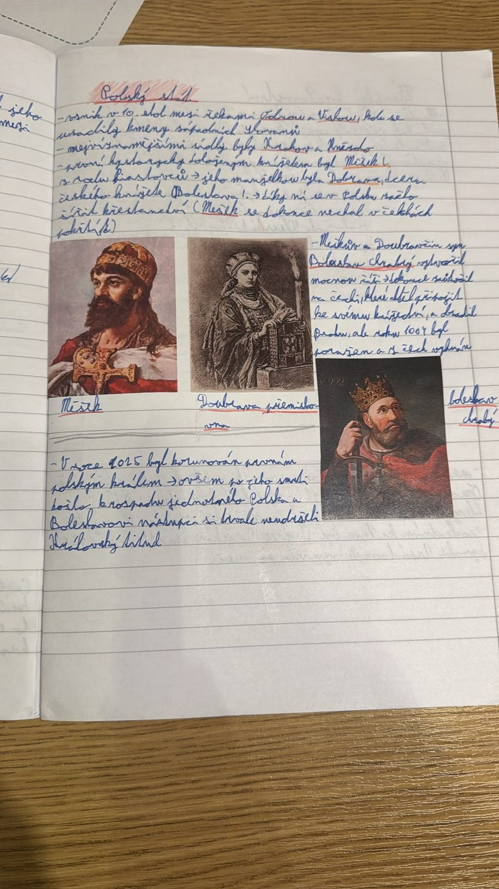

10. století – 1025
Polský stát
V 10. století vznikl mezi Odrou a Vislou polský stát pod vládou Piastovců. Měšek I. přijal křesťanství díky české manželce Doubravce a jeho syn Boleslav Chrabrý se roku 1025 stal prvním polským králem.
Zvýrazněné je v sešitě podtržené.
- 1004 Boleslav Chrabrý poražen a vyhnán z Čech
- 1025 Boleslav Chrabrý korunován prvním polským králem
Vznik Polska a Měšek I.


Polský stát vznikl v 10. století mezi řekami Odrou a Vislou. Usadily se tu kmeny západních Slovanů. Západní Slované jsou i Češi, Poláci jsou tedy naši blízcí příbuzní.
Nejvýznamnějšími sídly byly Krakov a Hnězdno.
Prvním historicky doloženým knížetem byl Měšek I. z rodu Piastovců. „Historicky doložený“ znamená, že o něm víme z písemných pramenů. Je to tedy první polský panovník, o kterém s jistotou víme, že opravdu žil.
Měškovou manželkou byla Doubravka (v sešitě Dobrava), dcera českého knížete Boleslava I., tedy Přemyslovna. Díky ní se v Polsku začalo šířit křesťanství a Měšek se dokonce nechal pokřtít v Čechách.
Proč je to důležité: přijetím křesťanství se Polsko zařadilo mezi křesťanské státy Evropy a okolní panovníci ho začali brát jako rovnocenného partnera. A křesťanství do Polska přišlo z Čech, díky české princezně.
Boleslav Chrabrý, první polský král
Syn Měška a Doubravky, Boleslav Chrabrý (chrabrý = statečný), vytvořil mocnou říši.
Dokonce zaútočil na Čechy, které chtěl připojit ke svému knížectví, a obsadil Prahu. Roku 1004 byl ale poražen a z Čech vyhnán.
Proč je to důležité: kdyby Boleslav vyhrál, Čechy by se staly součástí Polska. Jeho porážkou si Čechy uhájily samostatnost a vlastní panovníky.
Roku 1025 byl Boleslav korunován prvním polským králem. Královská koruna znamenala, že Polsko je samostatné a silné království. Po jeho smrti ale došlo k rozpadu jednotného Polska a jeho nástupci si královský titul trvale neudrželi. Podobně to bylo i v Čechách: první český král Vratislav II. měl titul jen pro sebe a dědičný se stal až roku 1212 (téma Svatá říše římská).
Paměťový obraz
- Dvě řeky a dvě města: mezi Odrou a Vislou stojí Krakov a Hnězdno.
- Česká nevěsta s křížem: Doubravka přiváží z Čech křesťanství Měškovi.
- Statečný syn na Pražském hradě: Boleslav Chrabrý obsadí Prahu, 1004 utíká, 1025 si nasadí královskou korunu.
Vyzkoušej se
Odpověz nahlas, teprve pak otevři odpověď. Procvičit náhodně
Kdy a kde vznikl polský stát?
V 10. století mezi řekami Odrou a Vislou, kde žily kmeny západních Slovanů.
Která byla nejvýznamnější sídla Polska?
Hnězdno a Krakov.
Kdo byl prvním historicky doloženým polským knížetem a z jakého rodu?
Měšek I. z rodu Piastovců.
Kdo byla Doubravka (Dobrava)?
Česká princezna, dcera knížete Boleslava I. a manželka Měška I.
Jak se do Polska dostalo křesťanství?
Díky Doubravce; Měšek se kvůli ní nechal pokřtít.
Kdo byl synem Měška a Doubravky?
Boleslav Chrabrý.
Co znamená přídomek Chrabrý?
Statečný.
Co udělal Boleslav Chrabrý v Čechách a jak to skončilo?
Zaútočil na Čechy a obsadil Prahu, roku 1004 byl poražen a vyhnán.
Co se stalo roku 1025?
Boleslav Chrabrý byl korunován prvním polským králem.
Co se stalo s Polskem po smrti Boleslava Chrabrého?
Rozpadlo se a jeho nástupci si trvale neudrželi královský titul.
Proč bylo důležité, že Boleslav Chrabrý roku 1004 prohrál?
Čechy se nestaly součástí Polska a zůstaly samostatné.
Proč bylo pro Polsko důležité přijetí křesťanství?
Zařadilo se mezi křesťanské státy Evropy; křesťanství přišlo z Čech díky Doubravce.
Zápis ze sešitu
Fotka stránky sešitu
